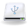
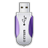

EFI Bootmanagement
Achtung!
Das Installieren und das Booten auf einem Rechner mit (U)EFI (Unified Extensible Firmware Interface) gestaltet sich zur Zeit insofern schwierig, weil die verschiedenen Hersteller die Vorgaben zu einem (U)EFI-BIOS sowohl programm-technisch als auch designmäßig unterschiedlich ausgestalten. Es können deshalb in dieser Artikelserie keine allgemein gültigen Hinweise gegeben werden.
Man muss sich also vorab ausführlich mit diesem Thema befassen und sich über die reale Lösung/technische Umsetzung am eigenen Rechner informieren.
Dieser Artikel wurde für die folgenden Ubuntu-Versionen getestet:
Ubuntu 16.04 Xenial Xerus
Ubuntu 14.04 Trusty Tahr
Seit mehreren Jahren kommen zunehmend Computer-Systeme auf den Markt, die mit einem Unified Extensible Firmware Interface (U)EFI statt dem lange Zeit genutzten BIOS ausgestattet sind.
Deshalb wurden in dieser Artikelserie alle relevanten Fakten zusammengetragen, um die Übersicht über erforderliche Maßnahmen zu bündeln. Es wird das Installieren und Betreiben eines Rechners mit einem (U)EFI beschrieben, wie es zur Zeit bei Ubuntu und deren Derivaten eingesetzt werden kann.
Es werden Erfahrungen aufgezeigt, Hinweise und Problemlösungen gegeben, wie man Ubuntu sicher auf einem solchen System installiert, startet und betreibt. Dabei wird hier auf Besonderheiten und Probleme eingegangen, die den Start von Ubuntu mittels CD/DVD oder USB-Stick, die Installation von Ubuntu sowie den ersten Start nach erfolgter Installation betreffen - sofern sie etwas mit der Nutzung von (U)EFI zu tun haben. Anderweitige Probleme mit Ubuntu auf EFI-Systemen, die eventuell nach längerer Laufzeit hervortreten, sind nicht Gegenstand dieses Artikels.
Allgemeine Anmerkung¶
Grundsätzlich ist die Installation von Ubuntu auf einem System mit einem EFI nicht schwieriger als auf einem System mit einem BIOS. D.h. besondere manuelle Eingriffe sind in der Regel vor oder während der Installation nicht notwendig, sofern das EFI seitens des System- oder Mainboard-Herstellers sauber implementiert wurde.
Voraussetzung ist allerdings, dass man den Boot-Mechanismus - der gegenüber einem BIOS-System komplexer ist - kennt und damit umzugehen weiß. Daher muss man dem Startvorgang z.B. mit der Ubuntu-CD oder eines Ubuntu-USB-Sticks
aufbauend auf einem 64-Bit-ISO (*.amd64-Datei)
besondere Aufmerksamkeit schenken, um etwaigen Fallstricken, die sich daraus ergeben können, von vornherein aus dem Weg zu gehen.
Ausreichende Kenntnisse vom Bootloader GRUB 2 werden hierbei vorausgesetzt - besondere Gegebenheiten innerhalb von GRUB 2 werden jeweils gezielt angesprochen.
Hinweis:
Die Nutzung von secure-boot ist in der Regel mit den offiziellen Ubuntu-ISO-Dateien problemlos möglich.
Die meisten Apple Rechner sind in der Lage, die ISO's mit der normalen *-amd64.iso Kennung direkt im EFI-Modus zu starten, sofern die Rechner Firmware auf dem letzten Stand ist. Die speziellen ISO's amd64-mac (Intel x86 64Bit) für Apple Hardware werden nur noch bis Trusty Tahr (14.04 LTS) einschließlich bereitgestellt.
Ob das System im BIOS oder im EFI/UEFI gestartet wurde, kann man sich im Livesystem im Terminal anzeigen lassen mit:
[ -d /sys/firmware/efi ] && echo UEFI || echo BIOS
Artikel zum Thema¶
| Artikelserie zum (U)EFI | |
 Grundlagen | In diesem Artikel wurde alles Wissenswerte gesammelt, was den Autoren während der Erstellung dieser Artikelserie aufgefallen war und beachtet werden sollte. Es sollen vor einer Installation notwendige Informationen gegeben sowie die Problemstellung über die eingesetzte Hardware und Firmware hinsichtlich (U)EFI aufgezeigt werden. |
 Installation | Dieser Artikel befasst sich mit der allgemeinen Vorbereitung, das Starten eines Installationsmediums und Ausführung einer Installation auf einem mit (U)EFI ausgerüsteten Rechner. Weiterhin werden ergänzende Informationen zur Partitionierung, Behebung von Problemen mit Festplatten, zum Installer ubiquity sowie zum Bootloader gegeben. |
 Deinstallieren | Dieser Artikel befasst sich damit, ein bestehendes Betriebssystem (auf Basis einer EFI_Installation) aus einem Dualboot selektiv wieder zu entfernen. Es werden alle Schritte beschrieben, die es ermöglichen das eine Betriebssystem ohne Beeinträchtigung des anderen zu entfernen. Das gilt sowohl für ein Ubuntu als auch für ein Windows. |
|  Externer Datenträger | Dieser Artikel befasst sich mit der Installation auf einem externen Datenträger. Es werden Hinweise gegeben, was zu beachten ist, damit das Basissystem auf einem Hostrechner durch das Installieren nicht beschädigt wird und wie man diesen Datenträger so aufbereitet, dass dieser an jedem (anderen) Rechner mit einem EFI-BIOS starten kann. |
 Nachbearbeitung | In diesem Artikel werden die Grundeinstellungen bzw. erforderliche Abänderungen beschrieben, um den Bootvorgang und das System zu optimieren. Ergänzend werden Maßnahmen beschrieben, um eine Installation im EFI-Modus nachträglich mit secure-boot einzurichten |
 EFI nach BIOS | Dieser Artikel beschreibt das nachträgliche Umstellen einer Ubuntu-Installation vom EFI-Modus auf den BIOS-Modus. Es werden alle Schritte beschrieben, wie ohne Verlust von Daten bzw. der von den Benutzern gesetzten Einstellungen dieses auszuführen ist. |
 EFI-Werkzeug | Wie man das EFI-Bootmanagement seinen Bedürfnissen anpassen, bestehende Probleme sich anzeigen lassen sowie entsprechende Korrekturen aus dem System heraus einbringen kann, wird in diesem Artikel beschrieben |
|  USB-Stick für UEFI Rechner | Dieser Artikel beschreibt einen einfachen Weg, ein Ubuntu-"amd64.iso" auf einen USB-Stick aufzubringen und empfiehlt / beschreibt Ergänzungen, die so in einem Standard-ISO für die Benutzung nicht vorhanden sind. |
 Problemlösungen | Dieser Artikel enthält eine Übersicht der bisher erkannten Probleme und eine Sammlung von Maßnahmen, sofern diese nicht in die obigen Artikel passten. Dabei werden auch Querverweise in andere Wikiartikel gegeben, die das Verständnis zu einem System mit / unter EFI-BIOS erweitern helfen |

Links¶
UEFI Spezifikation
 - Aufbau und Grundsätze
- Aufbau und GrundsätzeUEFI - Unified Extensible Firmware Interface
NVRAM - Non-Volatile Random-Access Memory
- Erstellt mit Inyoka
-
 2004 – 2017 ubuntuusers.de • Einige Rechte vorbehalten
2004 – 2017 ubuntuusers.de • Einige Rechte vorbehalten
Lizenz • Kontakt • Datenschutz • Impressum • Serverstatus -
Serverhousing gespendet von